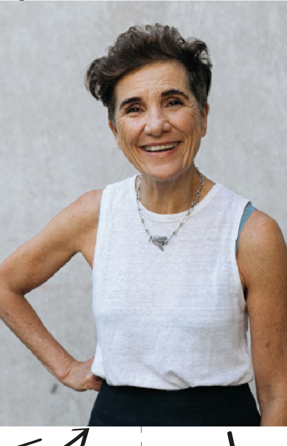
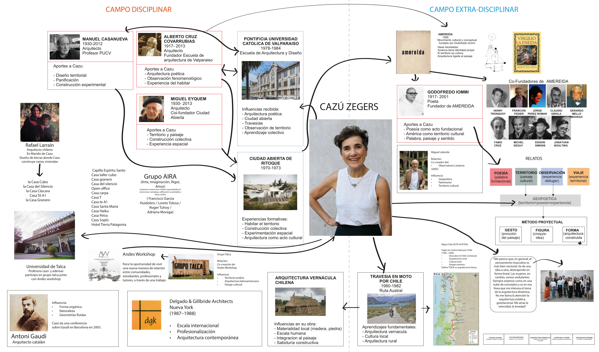
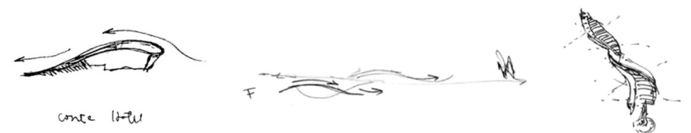
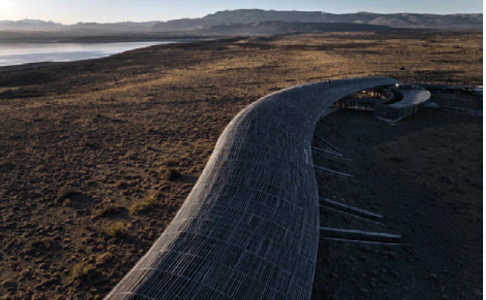
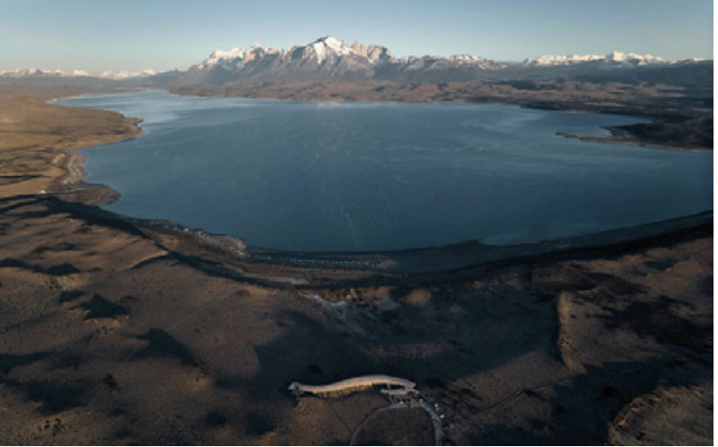
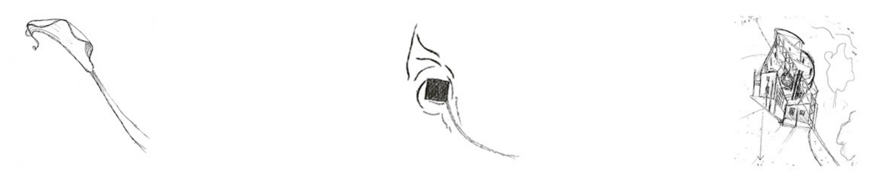
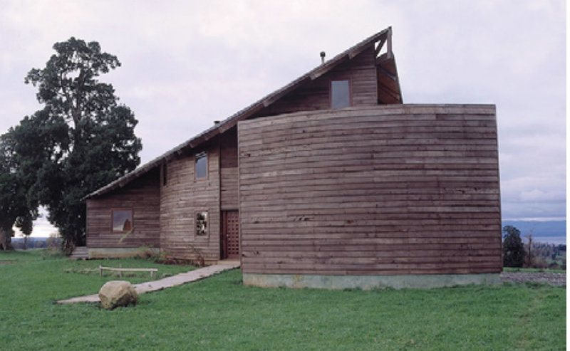
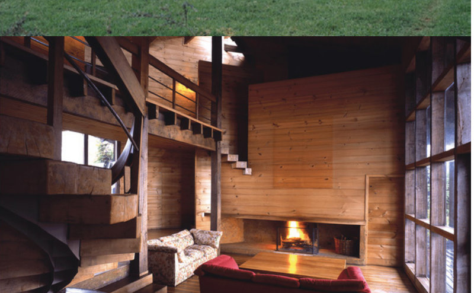

Sistemas globales de circulación y validación disciplinar. Dimensionamiento y deconstrucción crítica de relatos.
Alumnos: Juan Caveda · Santiago Guajardo Ayudante: Arq. Juan Petrecca
Contenido
Índice
Punto de partida
Lo que aprendemos es lo validado
Salón de los validados
Premios · menciones · publicaciones · bienales · libros de texto
Lo que estudiamosLo que se citaEl canon
Salón de los perdedores
También hacían arquitectura. No los conocemos.
Sin premioSin publicaciónSin relato
¿Cómo se entra al primer salón? ¿Quién abre la puerta?
1
Parte 1 de 5
Cronología
Trayectoria como artefacto y sus interacciones con el campo de saberes y prácticas desde el interior de la disciplina.
Cronología · Conteo y filtros
27obras
Pasá el mouse por una obra para ver el resumen; tocala para abrir la ficha y las fotos
Cronología · Geografía · 26 de 27 obras en Chile
+ Jardín Memorial Cruz Roja, Ginebra (Suiza)
×1
Rueda del mouse o botones + / − para acercar; arrastrá para mover. Satélite y mapa necesitan internet. Exacta solo en 4 obras (hotel de Torres del Paine, Magnolia, Golf de Manquehue y capilla); el resto es aproximada por sector.
Cronología · Contexto mundial y nacional
1991
Velocidad8 spremio publicaciónteclas [ y ] para cambiar de año
Cronología · Validación: premios y publicaciones
La validación llega con el hotel
Rombos: premios (naranja: del Hotel Tierra Patagonia). Círculos azules: publicaciones y notas de prensa (más oscuro: escala global). Fuente: web del estudio; su archivo de prensa arranca en 2012.
2
Parte 2 de 5
Bio
Revisión de antecedentes biográficos, geográficos, socioculturales y formativos de nuestro caso. Vínculos interprofesionales. Sociedades, colaboraciones, vínculos.

Bio · La autora
María del Carmen «Cazú» Zegers
Arquitecta chilena, nacida en Santiago en 1958. Formada en la Escuela de Valparaíso (PUCV, 1978–84). Estudio propio desde 1990.
27obras relevadas, 1991–2023
1993primer Gran Premio de Arq. Latinoamericana
Poder¿Quién la financia?
Validación¿Quién la legitima?
Disciplina¿Desde dónde piensa?
Dos obras para contestar: Hotel Tierra Patagonia (la más conocida, 4.900 m²) y Casa Cala (su «casa tesis», 447 m²).
Bio · Biografía
1958
Campo disciplinarCampo extra-disciplinarObra y mercado
3
Parte 3 de 5
Genealogía
Disciplinar y extra-disciplinar. Cadenas de circulación y reproducción de saberes: referentes, colegas pares, discípulos. Instituciones de validación.
Genealogía

Genealogía · Relatos
Las cosas dichas por ella
4
Parte 4 de 5
Triángulo del productor
Profesión, disciplina y mercado de actuación. ¿Quién financia la obra? ¿Quiénes son los promotores de esos financistas?
Triángulo del productor · Modelo
Tres vértices para desarmar una obra
Vértice 1
DISCIPLINA
¿Bajo quiénes se funda?
Los maestros del árbol genealógico: el pensamiento teórico y el productivo que la sostienen.
Vértice 2
VALIDACIÓN
¿Quién la legitima?
Revistas, premios, publicaciones, bienales. Las cadenas por las que una obra se vuelve «buena».
Vértice 3
PODER
¿Quién la financia?
Comitente, promotores, capital. ¿Cómo llega el encargo? ¿Quién contrata?
Gesto+Figura+Forma
El método proyectual de Cazú (Valparaíso): emoción del paisaje → croquis-idea → arquitectura construida.
Triángulo del productor · Criterio de selección
Una de gran escala y otra que contraste
Obra 1 · la más conocida
Hotel Tierra Patagonia
4.900 m²construidos
70 hade terreno
2011–12año
Escala de hotel, comitente empresa.
La obra con más premios: 12 de 21 de su trayectoria.
Donde mejor se ve el sistema de validación global.
vs.
Obra 2 · el contraste
Casa Cala
447 m²construidos
20 hade terreno
1991–92año
Escala de casa, cliente particular.
Su «casa tesis»: el origen del método Gesto–Figura–Forma.
Primer premio (1993): cómo empieza la validación.
El método se puede repetir. Con el mismo triángulo (disciplina, validación, poder) se puede leer cualquier otra obra de la trayectoria. En la lámina siguiente: Hotel Magnolia, Kawelluco y la Guía de etnoingeniería.
Triángulo del productor · Obra 1
Triángulo del productor · Obra 1 · ¿Existe doble relato?
Hotel Tierra Patagonia
El relato
«El hombre contemporáneo […] no está equipado para habitar la intemperie sin una protección. […] Desde una postura leve y precaria la arquitectura se suma de manera respetuosa al patrimonio natural.»

Propuesta de «mínimas intervenciones» que «lejos de ser pobre, se vuelve virtuosa».
Lo que el relato no dice
4.900 m²construidos
70 hade terreno
La dueña es Katari S.A. (Tierra Hotels), de las familias Purcell y Matetic. En 2022 vendieron el 83,5 % a un fondo de inversión. La noche cuesta entre US$ 2.450 y 4.540 por habitación, con mínimo de 3 noches.
Turismo de lujoSki (Portillo)Vino (Matetic)Capital privado (KSL)


¿Mínimas intervenciones? Con 4.900 m² en 70 hectáreas y un hotel de lujo en manos de capital financiero, ¿es leve la obra o es leve el relato?
Triángulo del productor · Obra 2
Triángulo del productor · Obra 2 · ¿Existe doble relato?
Casa Cala
El relato
Se cruzan «la forma y la palabra para crear un lenguaje del aquí, vernáculo, donde el desarme del galpón tradicional es el deshoje de la flor».
Lo vernáculo evoca lo popular, lo rural, el saber comunitario desinteresado y la infraestructura productiva básica del campo chileno.

Lo que el relato no dice
447 m²construidos
20 hade terreno
La web ubica la obra en Lago Ranco (Los Ríos): una casa de autor de 447 m² en 20 hectáreas de propiedad privada, para un cliente particular. Lo vernáculo aparece como lenguaje y material, no como saber comunitario.


¿Doble discurso? Un «lenguaje del aquí» que llega con firma de autora, premio y propietario.
Triángulo del productor · Comparación
Cambia la escala. No la estructura.
Casa Cala 1991–92
Hotel Tierra Patagonia 2011
Escala
447 m² · 20 ha
4.900 m² · 70 ha
Disciplina igual
Escuela de Valparaíso · Amereida · Ciudad Abierta · Gesto + Figura + Forma
Validación
Gran Premio Latinoamericano 1993 · Bienales · Architectural Review · ArchDaily / ARQA
Revistas de viaje y lujo · premios de hotelería · ArchDaily / ARQA / Architizer
Poder
José Manuel Morales, cliente (el cargo que le atribuía el TP no se pudo confirmar)
Katari S.A. (Tierra Hotels): familias Purcell y Matetic; en 2022 vende el 83,5 % a un fondo (KSL)
Relato
«Lenguaje del aquí», vernáculo
«Leve y precaria», mínimas intervenciones
Tensión
Levedad poética ↔ casa de autor premiada en 20 ha privadas
Bajo impacto ↔ 4.900 m², US$ 2.450–4.540 por noche
Triángulo del productor · Clientes y comitentes
Quiénes encargaron: 27 obras, 1991–2023
El tamaño del círculo es la superficie. Tipo de cliente asignado por nosotros según el nombre del comitente. Superficies sin verificar: Santa María, Casa Llu y Casa Haiku.
Son esbozos con datos de la web del estudio y de la prensa. Cada uno se podría desarrollar como el de Tierra Patagonia y Casa Cala.
Triángulo del productor · Tensiones
Cuando los triángulos chocan
Para pocos
¿Puede una arquitectura pensada para pocos convertirse en modelo para resolver problemas de muchos?
Segundas viviendas, hoteles boutique, desarrollos turísticos y ruralizaciones: clientes de alto poder adquisitivo.
Paisaje y mercado
¿El paisaje también adquiere valor económico?
En Kawelluco se preservan cientos de hectáreas de bosque, pero sigue siendo intervención privada: la naturaleza pasa a ser parte de un artefacto inmobiliario.
Etnoingeniería · BID
¿Esas comunidades participan realmente? ¿Cuál es el trato con un productor como el BID?
Guía de etnoingeniería (2022) por encargo del Banco Interamericano de Desarrollo.
Tierra y cultura
¿La cultura indígena inspira el diseño mientras las comunidades siguen sin acceso a la tierra?
Historia repetida: lo vimos en el desarrollo inmobiliario del Delta para despojar a los isleños.
«La arquitectura no cambia nada. Siempre está del lado de los más ricos. Lo importante es creer que la vida puede ser mejor.»Oscar Niemeyer
5
Parte 5 de 5
Reflexión crítica
A partir de teóricas, textos, videos, debates, y a partir del propio caso y el propio trabajo realizado.
Reflexión crítica · Teóricas
Siete ideas de las teóricas
Reflexión crítica · Textos
Once lecturas, una caja de herramientas
Reflexión crítica · Los textos entre sí
Cómo dialogan los textos entre ellos
Cada punto es un par de lecturas que dialogan. Tocá un punto para ver coincidencias y divergencias.
Reflexión crítica
Sabemos más del Partenón que de nuestra propia cultura arquitectónica latinoamericana.
Mirada hacia Europa y Norteamérica: ¿cosa de nuestra cultura, o algo que nos imponen?
Reflexión crítica · Hallazgos
Lo que encontramos
1
La validación llega con el hotel
Hasta 2011, un premio (el de 1993). Desde 2012, veinte, y la prensa se multiplica.
2
Valida el turismo de lujo y la prensa digital global
12 de los 21 premios son del hotel. De las notas fechadas, 21 de 35 son de medios globales.
3
La escala es la del suelo
Mediana de una hectárea de terreno, cincuenta veces lo construido. 13 personas, 11 empresas y 2 instituciones como clientes.
4
El relato leve convive con un productor de escala
«Leve y precaria» y 4.900 m², US$ 2.450 a 4.540 por noche, un hotel vendido en parte a un fondo de inversión.
5
Hay contrapesos reales
Un método propio, una genealogía seria, la reserva de 600 ha en Kawelluco y trabajo con comunidades. La crítica debe incluirlos.
Conclusión
Validar no es comprender
Empezamos preguntando cómo una arquitectura que se cuenta como leve, precaria y del lugar llega a ser validada en el mundo, y no si Cazú Zegers es buena o mala arquitecta. Lo que vemos es que el relato y el productor no coinciden, y que esa distancia es lo que nos deja ver el sistema.
La levedad se sostiene en un método, en una genealogía seria y en trabajo real con comunidades. Pero llega a nosotros por otro camino: casi sin premios hasta el hotel, y después sobre todo de la hotelería de lujo y de la prensa global. La obra «leve» tiene 4.900 m², 70 hectáreas y un dueño que vendió el 83,5 % a un fondo de inversión.
Nos quedamos con tres cosas: que validar no es comprender; que el canon también se arma con tarifas, premios y revistas; y que desarmar un relato no obliga a desacreditar la obra, sino a preguntar quién la paga, quién la aplaude y para quién existe. Es lo que Cacopardo nos pidió: no quedar colgados de una verdad.
Conclusión
Productor ≠ relato
«Los americanos éramos imitadores de costumbres porque no habíamos asumido nuestra propia cultura…»Cazú Zegers
Gracias. Juan Caveda · Santiago Guajardo Teoría y Crítica 1.4 · Cacopardo · Ayudante: Arq. Juan Petrecca · 2026
Material de lectura
Clases teóricas y material de lectura
Tocá una clase para ver cómo la usamos en el trabajo.
Material de lectura · Videos
Videos de las teóricas
Ciclo anterior (hace 6 años): la numeración no coincide exacto con la de este año. Tocá un video para abrirlo en YouTube.
Índice
Atajos
→Espacio siguiente paso ← anterior PgDnPgUp saltar de lámina (clicker) G índice · F pantalla completa · B pantalla negra P vista del presentador (abrila en la pantalla de la notebook) InicioFin primera / última · ? esta ayuda